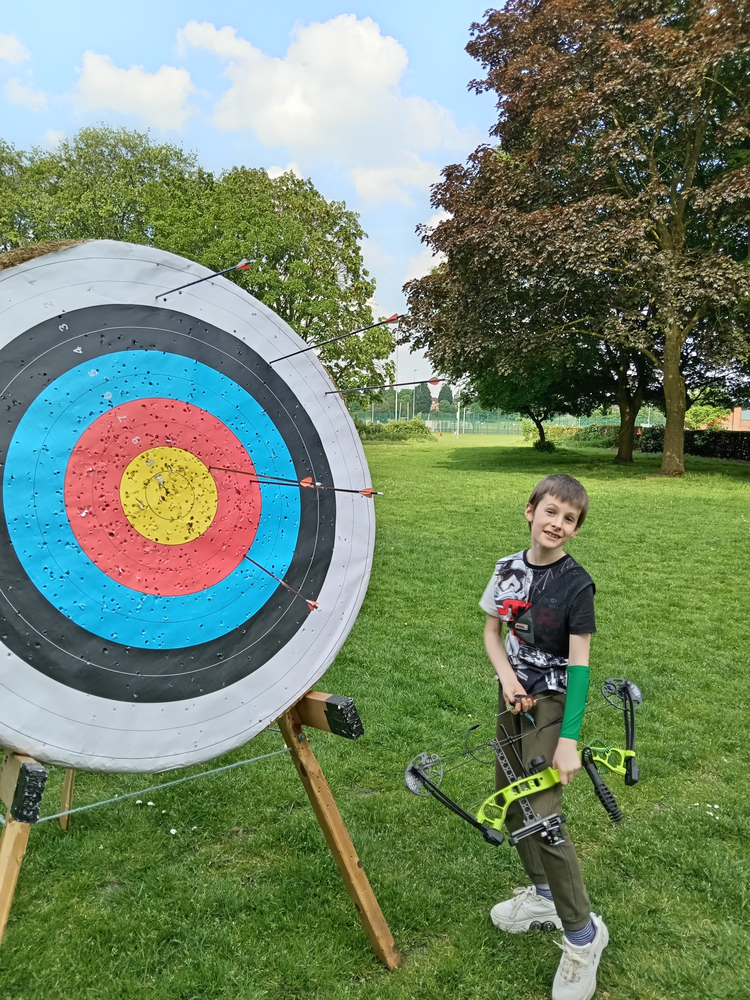
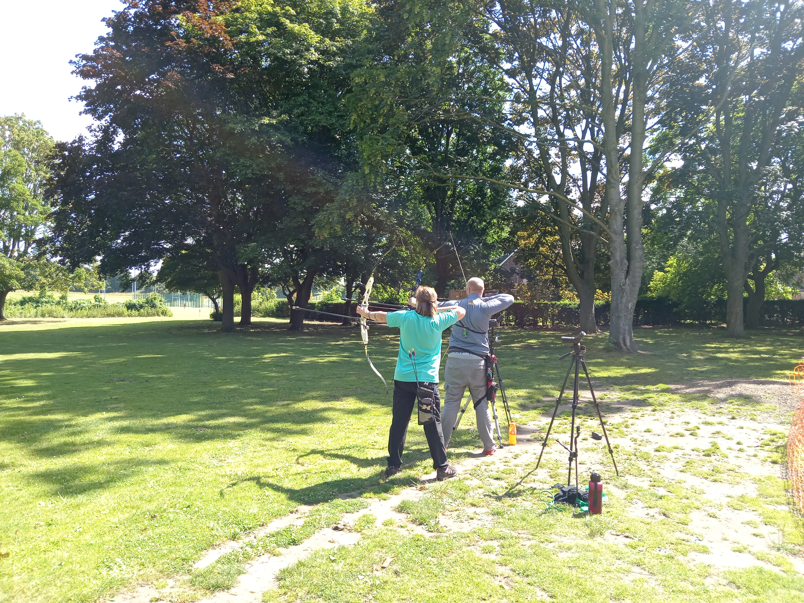
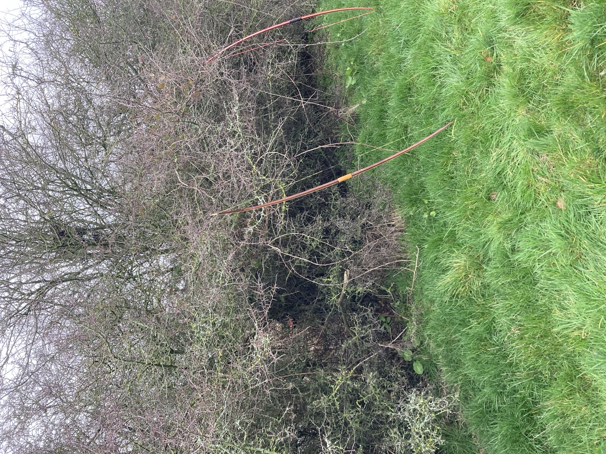

Learn to shoot
Take a six-week Beginners Course with qualified coaches and all equipment provided.
View courses →Winnington Park Bowmen is one of Cheshire’s longest-established archery clubs. We help people take their first shot, develop their skills and enjoy a sport they can stay with for life.
Take a six-week Beginners Course with qualified coaches and all equipment provided.
View courses →Fun, safe coaching sessions for young archers aged 7–13, with a parent or guardian present.
Discover Juniorlings →Completed a course elsewhere? Ask us about a safety assessment before joining the club.
Ask for an assessment →


TWO PLACES TO SHOOT
READY WHEN YOU ARE